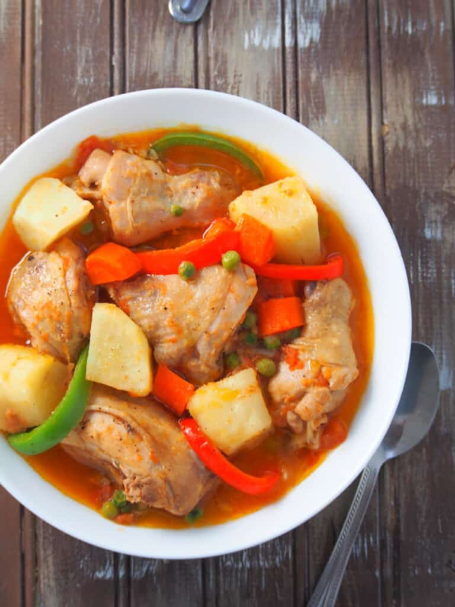

Chicken Apritada

Chbroth.
It is a popular cold weather dish. I always feel warm and cozy every time I eat it.
This Filipino Chicken Soup is best enjoyed with fish sauce as dipping sauce, and a cup of warm white rice.
Recipes
- 1/4 cup canola oil
- 2 medium potatoes, peeled and quartered
- 1 large carrot, peeled and cut into cubes
- 1/2 small red bell pepper, cored and sliced into 1/2-inch thick strips
- 1/2 small green bell pepper, cored and sliced into 1/2-inch thick strips
- 4 pounds chicken cut into serving pieces
- 1 small onion, peeled and sliced thinly
- 3 clovers garlic, peeled and minced
- 6 large roma tomatoes
- 1 tablespoon fish sauce
- 1 cup water
- 1/2 cup frozen sweet peas thawed>
- salt and paper to taste
How to Cook
- In a pan over medium heat, heat oil
- add potatoes and carrots and cook, turning once or twice, until lightly browned, remove from pan and drain on paper towels
- remove excess oil from pan except for about 2 tablespoons
- add bell peppers and cook for about 30 to 45 seconds. remove from pan and drain on paper towels.
- add oniuons and garlic and cook until softened
- add chicken and cook, turning on sides once or twice, until lightly browned but not cooked through
- add tomatoes and cook, mashing regularly with back spoon until softened and release juices
- add fish sauce and cook for about 1 to 2 min
- add water and bring to a boil
- lower heat, cover and cook for about 20 to 30 minutes or until chicken is cooked through and sauce is thickened to desired consistency.
- add potatoes and carrots and continue to cook until fork-tender
- add bell peppers and sweet peas. cook for 1 to 2 minutes or until green pease are heated through and bell peppers are tender yet crisp
- season with salt and pepper to taste. serve hot.